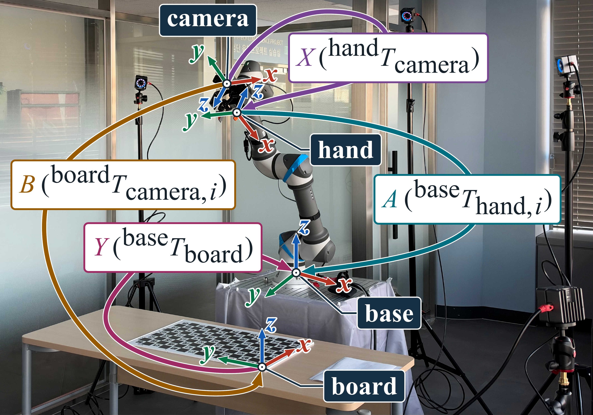
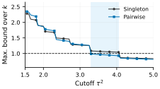

Grouped Deletion Bounds를 이용한
RWHEC 해의 TLS 최적성 인증Grouped Deletion Bounds for Certifying
TLS Optimality in Robot–World
Hand–Eye Calibration
인하대학교Inha University
이미 구한 RWHEC 해가 TLS 기준에서도 최적인지 수치적으로 인증하는 방법이다. LS SDP relaxation의 dual 해 하나로 관측 그룹별 deletion bound를 만들고, singleton bound와 pairwise bound를 차례로 적용한다. 제거할 관측 조합을 일일이 열거할 필요가 없어 계산량이 크게 줄어든다. 실측 44쌍에서는 singleton으로 인증되지 않던 16개 cutoff를 pairwise가 인증했고, 합성 실험에서는 cascade가 pairwise 대비 실행시간을 19.5–28.8% 줄였다.We reuse a least-squares dual solution to bound the benefit of deleting observations. Combining singleton and pairwise bounds provides a numerical certificate of truncated least-squares optimality for full-support RWHEC candidates. On 44 real pairs, pairwise certifies 16 cutoffs where singleton is inconclusive; on synthetic data, the cascade cuts runtime by 19.5–28.8% relative to pairwise.
실험 구성과 좌표계Experimental setup and coordinate frames
RWHEC는 AᵢX = YBᵢ를 만족하는 두 고정 변환 X, Y를 구하는 문제다. X는 로봇 말단에서 본 카메라 자세, Y는 로봇 베이스에서 본 보드 자세다. 자세 i마다 Aᵢ는 forward kinematics로 계산하고, Bᵢ는 영상에서 추정한 보드 자세를 역변환해 얻는다. AᵢX와 YBᵢ는 둘 다 베이스 기준 카메라 자세이므로 서로 같아야 한다.RWHEC jointly estimates the fixed hand–camera transform X and base–board transform Y. At pose i, robot forward kinematics provides Aᵢ, while inversion of the image-based board pose provides Bᵢ. The two paths from the camera frame to the base frame must agree, giving AᵢX = YBᵢ.

측정한 로봇 말단 자세Observed robot hand pose
구할 말단–카메라 변환Unknown hand–camera transform
구할 베이스–보드 변환Unknown base–board transform
영상에서 추정한 보드 자세의 역변환Inverse of observed board pose
는 b 좌표계의 점을 a 좌표계로 옮기는 변환이다. 보드 자세 추정으로 얻는 값은 maps coordinates from frame b to frame a. Board pose estimation returns 이므로 ; therefore, 로 둔다..
Grouped deletion boundsGrouped deletion bounds
TLS 목적함수는 관측마다 정규화한 비용을 1에서 잘라 합한다. 모든 관측 비용이 cutoff보다 작은 full-support 후보에 대해, 관측 일부를 빼고 다시 최적화해도 TLS 비용이 줄어들 수 없다는 충분조건을 검사한다.The TLS objective truncates each normalized observation cost at 1. For full-support candidates, we test sufficient conditions ensuring that deleting observations and reoptimizing cannot improve the objective.
무엇을 인증하는가What is certified?
LS 전역 최적해라도 TLS 기준에서 최적이라는 보장은 없다. TLS는 큰 잔차의 비용을 1로 묶어 두기 때문에, 잔차가 큰 관측을 빼고 다시 보정하면 전체 비용이 더 낮아질 여지가 있다. 이 연구는 새로운 강건 추정기를 만드는 대신, 주어진 후보에서 이러한 비용 감소가 일어날 수 없음을 확인하는 데 초점을 둔다.A globally optimal LS solution need not be optimal for the TLS objective. Because TLS caps large residual costs, recalibration after discarding observations can potentially achieve a lower cost. Rather than introducing a new robust estimator, this work tests whether a supplied full-support candidate can be improved through observation deletion.
관측 비용 qᵢ는 회전·병진 잔차의 가중 제곱합을 cutoff τ²로 나눈 값이다. 모든 관측에서 qᵢ < 1인 실행 가능한 후보를 full-support 후보라 하고, 그 비용을 U로 둔다. LS dual에서 얻은 global lower bound를 γ라 할 때, 관측 k개를 제거해서 얻을 수 있는 비용 감소량의 상한을 구한다.Each qᵢ is a weighted squared rotation-and-translation residual normalized by the cutoff τ². Full support means a feasible candidate with every qᵢ < 1. Let U denote the candidate cost and γ the global lower bound obtained from the LS dual; deletion bounds limit the possible improvement for each deletion-set size k.
- LS dual 재사용Reuse the LS dual
- LS SDP relaxation의 dual 해로 global lower bound γ와 관측별 비용 행렬을 만든다.Construct a global lower bound and observation cost matrices from the LS SDP dual solution.
- Singleton · pairwise boundSingleton · pairwise bounds
- 관측 하나, 또는 관측 두 개를 한 그룹으로 묶어 spectral bound를 계산하고, 관측 제거로 줄어드는 비용을 위에서 누른다.Bound the benefit of deleting observations using spectral bounds for single observations and pairs.
- Cascade 인증Cascade certification
- Singleton 조건을 먼저 보고, 통과하지 못할 때만 O(N²)개 관측 쌍의 pairwise bound를 계산한다.Test the singleton condition first and compute pairwise bounds over the O(N²) pairs only when required.
인증 조건Certification condition
Singleton bound는 관측별 기여 중 큰 것 k개를 더한 값이고, pairwise bound는 관측 쌍의 spectral 구조를 반영한다. 각 k에서 둘 중 작은 값을 쓰므로, 한쪽 bound만으로는 인증되지 않는 후보도 인증할 수 있다. Cascade는 singleton 조건부터 확인하고, 여기서 통과하면 pairwise 계산을 건너뛴다.The singleton bound aggregates individual observation contributions, while the pairwise bound uses the spectral structure of observation pairs. Taking the smaller bound at each k can certify candidates that either bound alone cannot. The cascade skips pairwise computation whenever singleton already passes.
검사 범위는 k = 1, …, min(N, ⌊U⌋)이다. 다른 전제조건을 만족하면서 이 범위의 모든 k에서 Bₖ < 1이면, 관측을 하나 이상 제거한 해의 비용은 항상 U보다 크다. k > U인 경우에는 제거 penalty k만으로 이미 U를 넘는다. 따라서 TLS 최적값은 전체 LS 최적값과 같고 구간 [γ, U] 안에 놓인다. 수치 인증에서는 이 구간의 상대 primal–dual gap이 충분히 작은지도 함께 확인한다.The test covers k = 1, …, min(N, ⌊U⌋). If the bound condition holds for every tested k, a solution deleting at least one observation cannot improve upon candidate cost U. For k > U, the deletion penalty alone exceeds U. With a sufficiently small LS optimality gap, this certifies agreement of the TLS and LS optimal values within numerical tolerance.
판정 기준은 상대 primal–dual gap (U − γ)/max{1, U} ≤ 10⁻⁶, bound 조건 Bₖ < 1 − 10⁻⁷, solver 허용오차 10⁻¹⁰이다. Full-support 조건과 positive definiteness 등 명제의 전제조건도 함께 확인한다. 즉 부동소수점 연산 위에서 이루어지는 수치 인증이다.The manuscript uses a relative primal–dual gap ≤ 10⁻⁶, a bound threshold Bₖ < 1 − 10⁻⁷, and solver tolerance 10⁻¹⁰. This is a floating-point numerical certificate that also checks full support, positive definiteness, and the remaining prerequisites.
데이터 취득 과정Data acquisition
이미지와 로봇 측정값은 sample ID로 짝지었다. 보드 자세는 ChArUco 검출과 fisheye 카메라 모델로, 로봇 자세는 관절각과 RB5 URDF의 forward kinematics로 계산하였다. 공개 데이터는 저장된 이미지와 측정 기록만으로 재현할 수 있어 실제 장비나 ROS 연결이 필요 없다.Images and robot measurements are paired by sample ID. ChArUco detection and a fisheye camera model provide board poses; joint angles and RB5 URDF forward kinematics provide robot poses. Reproducing the stored dataset requires no connected robot, camera, or ROS session.
수집한 64쌍에서 reprojection RMS가 1 px를 넘는 19쌍과, 보드가 영상의 1% 미만을 차지하는 1쌍을 빼고 44쌍을 사용하였다. 선별 기준은 영상 품질뿐이며, RWHE 잔차를 보고 outlier를 걸러내는 과정은 거치지 않았다.Of 64 original pairs, 19 with reprojection RMS > 1 px and one with board image area < 1% were excluded by image-quality criteria, leaving 44 pairs. This selection is separate from outlier classification using RWHE residuals.
실험 결과Experimental results
실측 44쌍에서는 singleton으로 인증되지 않은 16개 cutoff를 pairwise와 cascade가 인증하였다. 합성 실험에서 cascade의 인증 건수는 어느 한 bound만 쓸 때와 같거나 더 많았고, 실행시간은 pairwise를 매번 계산하는 방식보다 짧았다. 같은 입력으로 SSR–DRS 재구현과 비교한 고정 9건에서는 SSR–DRS가 30초 예산 안에 한 건도 인증하지 못한 반면, cascade는 5건을 합계 0.27 s에 인증하였다.On 44 real observation pairs, pairwise and cascade certify 16 cutoff settings where singleton is inconclusive. In the synthetic study, cascade certifies at least as many cases as either bound alone while reducing runtime relative to always computing pairwise bounds. On nine fixed cases with identical inputs, an SSR–DRS reimplementation certifies none within a 30 s budget, while the cascade certifies five in 0.27 s in total.
실측 데이터: 보정 후보Real data: calibration candidate
인증 대상은 실측 44쌍으로 LS 추정한 고정 후보 X/Y이다. 기준 설정(τ² = 4, w_R = 125/4, w_t = 5000/4)에서 회전 잔차만 있다면 7.25°, 병진 잔차만 있다면 28.3 mm에서 관측 비용이 cutoff에 도달한다.The certified candidate is a fixed LS estimate X/Y from the 44 real pairs. At the reference setting (τ² = 4, w_R = 125/4, w_t = 5000/4), a rotation-only residual of 7.25° or a translation-only residual of 28.3 mm reaches the cutoff.
| 항목Item | 값Value |
|---|---|
| AX = YB 잔차 RMS (병진 / 회전)AX = YB residual RMS (translation / rotation) | 7.78 mm / 0.96° |
| 정규화 전 LS 비용 (w_R = 125, w_t = 5000)Unnormalized LS cost (w_R = 125, w_t = 5000) | 16.396 |
| τ² = 4에서의 cutoff 도달 크기 (회전 / 병진)Cutoff-reaching size at τ² = 4 (rotation / translation) | 7.25° / 28.3 mm |
| τ² = 4에서의 후보 비용 U · 최대 qᵢCandidate cost U · max qᵢ at τ² = 4 | 4.099 · 0.377 |
실측 데이터: cutoff별 인증 결과Real data: certification across cutoffs
후보 X/Y와 정규화 전 가중치를 고정한 채 75개 cutoff에서 인증 여부를 비교하였다. 3.30–4.05 구간의 16개 시험값은 singleton으로는 인증되지 않았고, pairwise와 cascade로는 인증되었다. 아래 표는 대표 cutoff의 최대 bound를 정리한 것이다.With X/Y and pre-normalization weights fixed, certification is evaluated at 75 cutoff settings. At the 16 tested values from 3.30 to 4.05, singleton is inconclusive while pairwise and cascade certify. The table lists maximum bounds at representative cutoffs.
| τ² | U | kmax | max B⁽¹⁾ (singleton)max B⁽¹⁾ (singleton) | max B⁽²⁾ (pairwise)max B⁽²⁾ (pairwise) | 판정Result |
|---|---|---|---|---|---|
| 1.0, 1.5 | — | — | — | — | full-support 불만족Not full support |
| 2.0 | 8.20 | 8 | 1.877 | 1.862 | 미인증Inconclusive |
| 3.0 | 5.47 | 5 | 1.270 | 1.285 | 미인증Inconclusive |
| 3.25 | 5.04 | 5 | 1.255 | 1.261 | 미인증Inconclusive |
| 3.30 | 4.97 | 4 | 1.082 | 0.986 | pairwise · cascade 인증Pairwise · cascade certify |
| 4.0 | 4.10 | 4 | 1.044 | 0.931 | pairwise · cascade 인증Pairwise · cascade certify |
| 4.05 | 4.05 | 4 | 1.042 | 0.928 | pairwise · cascade 인증Pairwise · cascade certify |
| 4.10 | 4.00 | 3 | 0.867 | 0.850 | 모두 인증All certify |
| 5.0 | 3.28 | 3 | 0.834 | 0.811 | 모두 인증All certify |
| 8.0 | 2.05 | 2 | 0.595 | 0.465 | 모두 인증All certify |
| 16.0 | 1.02 | 1 | 0.334 | 0.334 | 모두 인증All certify |
| 32.0 | 0.51 | 0 | — | — | U < 1, 제거 검사 불필요U < 1, no deletion test needed |

음영은 pairwise로만 인증된 16개 시험값이다. 다른 전제조건을 만족할 때 최대 bound가 1보다 작으면 인증되며, 수직 점선은 검사할 최대 제거 개수 kmax가 바뀌는 지점이다.Shading marks the 16 tested values additionally certified by pairwise. When the remaining prerequisites hold, a maximum bound below 1 certifies; vertical dashed lines mark changes in the maximum deletion-set size tested.
인증 경계는 kmax = ⌊U⌋가 바뀌는 지점과 겹친다. τ² = 3.30에서 U가 5 아래로 내려가 kmax가 5에서 4로 줄면 pairwise가 먼저 인증하고, τ² = 4.10에서 U가 4 아래로 내려가 kmax = 3이 되면 singleton도 인증한다. 그 사이 구간에서는 k = 4의 singleton bound가 1을 조금 넘는 반면, pairwise bound는 1보다 충분히 작다.Certification boundaries coincide with changes in kmax = ⌊U⌋. At τ² = 3.30, U drops below 5 and kmax falls from 5 to 4, so pairwise certifies first; at τ² = 4.10, U drops below 4 and singleton also certifies. In between, the singleton bound at k = 4 slightly exceeds 1, while the pairwise bound stays clearly below 1.
| τ² = 4, 제거 개수 kτ² = 4, deletion size k | 1 | 2 | 3 | 4 |
|---|---|---|---|---|
| Singleton B⁽¹⁾ₖ | 0.513 | 0.696 | 0.872 | 1.044 |
| Pairwise B⁽²⁾ₖ | 0.513 | 0.596 | 0.856 | 0.931 |
제거 집합 열거와의 실행시간 비교Runtime comparison with deletion-set enumeration
기준 설정 τ² = 4에서 같은 dual을 쓰는 fixed-dual enumeration과 비교하였다. Enumeration은 k ≤ 4인 모든 제거 집합, 즉 149,985개를 평가해야 했다. 같은 회차 3회 측정 중앙값 기준으로 pairwise가 약 42배 빨랐다.At the reference setting τ² = 4, pairwise is compared with fixed-dual enumeration using the same dual. Enumeration evaluates all 149,985 deletion sets with k ≤ 4; pairwise is approximately 42× faster in the corresponding three-run medians.
| 방법Method | 판정Result | 실행시간 · 3회 중앙값Runtime · three-run median |
|---|---|---|
| Pairwise | 인증Certified | 28.0 ms |
| Fixed-dual enumeration | 인증Certified | 1176.6 ms |
두 방법이 모두 인증한 실측 1건과 합성 8건 가운데 pairwise가 더 빠른 경우는 6건이었다. 실행시간에는 입력 처리, LS SDP 풀이, 인증이 모두 들어가며, 측정 환경은 Julia 1.10.10, COSMO Solver, Ryzen 7 7840HS, BLAS 단일 스레드이다.Across one real-data and eight synthetic cases certified by both methods, pairwise is faster in six. Timings include input processing, LS SDP solution, and certification. The manuscript uses Julia 1.10.10, COSMO Solver, a Ryzen 7 7840HS, and single-threaded BLAS.
공개 코드로 측정한 9회 중앙값을 보면 시간 구성이 더 분명하다. LS SDP 풀이가 약 9–10 ms, pairwise 검사가 약 16 ms를 차지하고 singleton 검사는 1 ms 안팎이다. τ² = 4에서는 singleton이 통과하지 못하므로 cascade(28.1 ms)가 pairwise(29.3 ms)와 비슷하지만, singleton이 통과하는 τ² = 4.5에서는 cascade가 pairwise 계산을 건너뛰어 11.5 ms로 pairwise(27.9 ms)의 약 41% 수준이다.Nine-run medians from the public code show the breakdown: the LS SDP takes about 9–10 ms, the pairwise check about 16 ms, and the singleton check about 1 ms. At τ² = 4 singleton fails, so cascade (28.1 ms) is close to pairwise (29.3 ms); at τ² = 4.5 singleton passes, and cascade skips pairwise to finish in 11.5 ms, about 41% of pairwise (27.9 ms).
| 공개 코드 · 9회 중앙값Public code · nine-run median | Singleton | Pairwise | Cascade |
|---|---|---|---|
| τ² = 4.0 | 11.9 ms · 미인증inconclusive | 29.3 ms · 인증certified | 28.1 ms · 인증certified |
| τ² = 4.5 | 11.7 ms · 인증certified | 27.9 ms · 인증certified | 11.5 ms · 인증certified |
합성 데이터의 인증 건수와 계산 효율Synthetic certification counts and computational efficiency
일반 자세와 회전축 제한 자세에서 각각 140건을 만들었다. N ∈ {44, 80}과 noise scale η ∈ {4, 5, 5.5, 6, 6.5, 7, 8}의 조합마다 seed 10개를 썼다. 카메라 자세에는 축별 표준편차가 회전 0.001η rad, 병진 0.0003η m인 Gaussian noise를 더했고, outlier는 넣지 않았다. 로봇 회전 벡터의 축별 표준편차는 일반 자세에서 (0.7, 0.7, 0.7) rad, 제한 자세에서 (0.02, 0.02, 0.7) rad이며, 병진은 축별 [−0.5, 0.5] m 균등분포에서 뽑았다. 후보는 선형 초기화 후 LS로 추정했고, 모든 후보가 full-support와 LS gap 등 전제조건을 만족하였다.The study contains 140 broad-motion and 140 limited-motion cases. Each combination of N ∈ {44, 80} and η ∈ {4, 5, 5.5, 6, 6.5, 7, 8} uses ten seeds. Gaussian camera noise has per-axis standard deviations of 0.001η rad and 0.0003η m, with no injected outliers. Robot rotation-vector standard deviations are (0.7, 0.7, 0.7) rad for broad motion and (0.02, 0.02, 0.7) rad for limited motion; translations are uniform in [−0.5, 0.5] m per axis. Candidates come from linear initialization followed by LS, and all satisfy full support and the LS gap criterion.
| 운동 조건Motion regime | Singleton | Pairwise | Cascade |
|---|---|---|---|
| 일반 자세 · 140건Broad motion · 140 cases | 62 | 62 | 65 |
| 회전축 제한 자세 · 140건Limited motion · 140 cases | 45 | 52 | 52 |
일반 자세에서는 singleton과 pairwise가 각각 62건을 인증했고, k마다 작은 bound를 고르는 cascade는 65건으로 3건이 더 많았다. 회전축 제한 자세에서는 singleton 45건, pairwise와 cascade 52건으로, 운동이 제한된 경우에 pairwise bound의 이득이 더 컸다. η ≥ 7에서는 세 방법 모두 인증하지 못하였다.In broad motion, singleton and pairwise each certify 62 cases, while cascade, taking the smaller bound at each k, certifies 65. In limited motion, singleton certifies 45 and pairwise and cascade 52, so the pairwise gain is larger under restricted motion. At η ≥ 7, none of the three methods certifies.
| 운동 조건Motion regime | pairwise 대비 cascade 실행시간 감소율Cascade runtime reduction vs. pairwise |
|---|---|
| 일반 자세Broad motion | 28.8% |
| 회전축 제한 자세Limited motion | 19.5% |
감소율은 사례별 3회 측정 중앙값을 모두 더해 pairwise와 비교한 값이다. 제한 자세에서 감소율이 낮은 이유는 singleton이 통과하는 사례가 적어 pairwise까지 계산하는 경우가 많기 때문이다.Reductions compare sums of per-case three-run median runtimes against pairwise. The smaller reduction under limited motion reflects fewer singleton passes, so the cascade falls through to pairwise more often.
기존 TLS 인증법과의 비교: SSR–DRS 재구현Comparison with an existing TLS certifier: SSR–DRS reimplementation
기존 TLS 인증법인 SSR–DRS를 RWHEC에 맞게 재구현하고, 관측·후보·정규화 전 가중치·cutoff를 똑같이 맞춰 비교하였다. 사례는 합성 8건과 실측 1건이다. 합성 8건은 운동 조건 2가지, N ∈ {44, 80}, 노이즈 양 끝값 η ∈ {4, 8}을 조합하고 seed 0을 사용하였으며(τ² = 16), 실측 1건은 44쌍·τ² = 4이다. 사례는 인증 결과와 무관하게 미리 정했고, 후보는 다시 추정하지 않았다. 각 방법을 3회씩 실행했으며 SSR–DRS에는 호출당 30초 예산을 주었다.SSR–DRS, an existing TLS certifier, is reimplemented for RWHEC and compared with identical observations, candidates, pre-normalization weights, and cutoffs. The eight synthetic cases cover two motion regimes, N ∈ {44, 80}, and the endpoint noise levels η ∈ {4, 8} with seed 0 (τ² = 16); the real case is the 44-pair dataset at τ² = 4. Cases were fixed before running, independent of certification outcomes, and candidates were not re-estimated. Each method runs three times, with a 30 s per-call budget for SSR–DRS.
| 자료Data | SSR–DRS | Singleton | Pairwise | Cascade |
|---|---|---|---|---|
| 일반 자세 합성 · 4건Broad synthetic · 4 cases | 0/4 · 125.083 s | 2/4 · 0.051 s | 2/4 · 0.186 s | 2/4 · 0.118 s |
| 제한 자세 합성 · 4건Limited synthetic · 4 cases | 0/4 · 122.788 s | 2/4 · 0.051 s | 2/4 · 0.193 s | 2/4 · 0.123 s |
| 실측 44쌍 · 1건Real 44 pairs · 1 case | 0/1 · 30.444 s | 0/1 · 0.011 s | 1/1 · 0.027 s | 1/1 · 0.028 s |
| 합계 · 9건Total · 9 cases | 0/9 · 278.315 s | 4/9 · 0.113 s | 5/9 · 0.405 s | 5/9 · 0.270 s |
표의 값은 인증 건수와, 사례별 3회 측정 중앙값을 미인증 사례까지 포함해 더한 시간이다. SSR–DRS는 27회 호출이 모두 30초 예산에 도달해 종료되었고, 상대 gap ≤ 10⁻⁶ 기준을 만족한 경우가 없었다. 제안법은 η = 4인 합성 4건과 실측 1건을 인증했으며, η = 8인 4건은 세 방법 모두 미인증이었다. 실측 사례에서는 앞의 결과와 마찬가지로 singleton이 미인증이고 pairwise와 cascade가 인증하였다.Entries give certified counts and the sum of per-case three-run median times, including inconclusive cases. All 27 SSR–DRS calls hit the 30 s budget without meeting the relative-gap criterion of 10⁻⁶. The proposed methods certify the four η = 4 synthetic cases and the real case; all three are inconclusive on the four η = 8 cases. On the real case, singleton is again inconclusive while pairwise and cascade certify.
이 결과는 자체 재구현, 고정된 9건, 30초 예산이라는 조건에 한정된다. 원 저자의 DRS/STRIDE 구현과는 초기화·투영·하한 보정 방식이 다르고, 병진 변수에 상한이 없는 문제에 맞춰 하한을 보수적으로 검증했으므로 기존 TLS 인증법 전반의 성능으로 일반화하지 않는다. 앞의 fixed-dual enumeration 비교(28.0 ms 대 1176.6 ms)와는 별개의 실험이다.These results are limited to this reimplementation, the nine fixed cases, and the 30 s budget. Initialization, projection, and lower-bound correction differ from the original DRS/STRIDE implementation, and the lower bound is validated conservatively for unbounded translation, so the comparison does not generalize to existing TLS certifiers as a whole. It is separate from the fixed-dual enumeration comparison above (28.0 ms vs. 1176.6 ms).
SSR–DRS 하한 검증 방식SSR–DRS lower-bound validation
원 논문의 수치 오차 보정은 변수의 노름이 유한하다는 상계를 쓰기 때문에, 병진 변수에 제약이 없는 RWHEC에 그대로 적용할 수 없다. 그래서 후보 비용 U 이하인 영역에서 병진 크기의 상계를 관측으로부터 유도하였다. ⌊U⌋ + 1개 그룹으로 관측을 나누면 적어도 한 그룹은 모든 관측이 절단되지 않는다는 점을 이용한다.The original numerical error correction assumes a finite norm bound on the variables, which does not hold for RWHEC with unconstrained translation. A translation bound on the sublevel set F ≤ U is therefore derived from the observations, using the fact that among ⌊U⌋ + 1 groups at least one contains only untruncated observations.
DRS가 만든 슬랙은 원래 좌표의 목적식과 다시 대조하고, 목적식 잔차와 전체 PSD 잔차를 이 상계로 보정해 하한 L = max{0, min{U, α − 7(N+1)δ − C_U ε}}을 얻는다. 모든 연산 오차는 Float64 구간으로 감쌌다. 검증이 성립하지 않으면 TLS 비용이 음수가 아니라는 사실만으로 하한 0을 쓴다. 유도는 저장소의 LOWER_BOUND.md에 정리되어 있다.DRS slacks are re-checked against the objective in original coordinates, and the objective and full PSD residuals are corrected with this bound to obtain L = max{0, min{U, α − 7(N+1)δ − C_U ε}}, with all rounding enclosed in Float64 intervals. When validation fails, the trivial lower bound 0 is used. The derivation is in LOWER_BOUND.md.
실험 설정과 결과 해석Experimental settings and interpretation
Cutoff는 1.5–5를 0.05 간격으로 검사하고 1, 8, 16, 32를 더했다. 실측 기준 설정의 정규화된 가중치는 회전 125/4, 병진 5000/4이며, 합성 실험은 w_R = 5000/16, w_t = 111111.1111/16을 사용하였다.The sweep tests 1.5–5 in steps of 0.05, plus 1, 8, 16, and 32. Normalized weights at the real-data reference setting are 125/4 for rotation and 5000/4 for translation; the synthetic study uses w_R = 5000/16 and w_t = 111111.1111/16.
Cutoff 분석은 같은 데이터에서 cutoff를 바꿔 가며 인증 결과가 어떻게 달라지는지 살펴본 민감도 분석이다. 어떤 cutoff가 물리적으로 적절한지는 별도의 문제로 남겨 두었다. 인증은 주어진 목적함수에 대한 수치 검증이며, 미인증은 bound가 충분히 작지 않아 판정하지 못했다는 뜻으로만 해석한다.The cutoff study assesses certification sensitivity on one dataset rather than physical cutoff suitability. Certification concerns the stated numerical objective; an inconclusive result does not imply suboptimality.
논문 결과 표의 실행시간은 3회 측정값이고, 공개 코드 표는 저장소에 포함된 9회 측정값이다. 저장소에서는 실측 44쌍 실험과 SSR–DRS 비교 9건을 재현할 수 있다. 합성 280건의 인증 건수와 실행시간은 논문 보고값이며, 해당 재현 코드는 포함하지 않았다.Paper runtime tables use three-run measurements; the public-code table uses the repository's nine-run measurements. The repository reproduces the 44-pair real-data experiment and the nine-case SSR–DRS comparison. The 280-case synthetic counts and runtimes are reported from the manuscript; their reproduction code is not included.
논문과 재현 자료Paper and reproduction materials
- 논문 원고 PDFManuscript PDF
- 코드와 실측 데이터Code and real dataset
- 실측 44쌍 재현 안내Real44 reproduction guide
- SSR–DRS 비교 재현 안내SSR–DRS comparison guide
인용 정보Citation
@unpublished{bae_grouped_deletion_bounds,
title = {Grouped Deletion Bounds for Certifying TLS
Optimality in Robot-World Hand-Eye Calibration},
author = {Bae, Jaeyoung and Kim, Byeongjun and Kim, Kwangki},
note = {Manuscript}
}